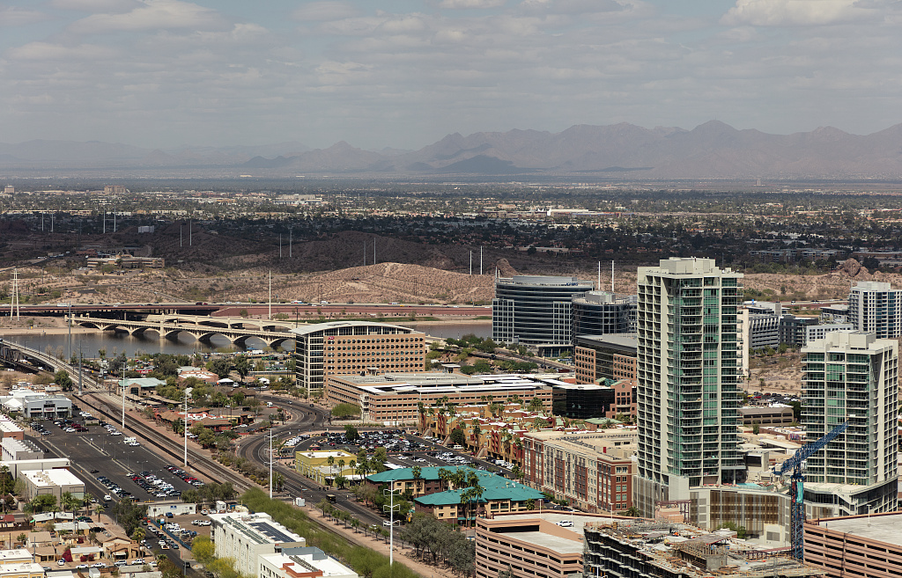
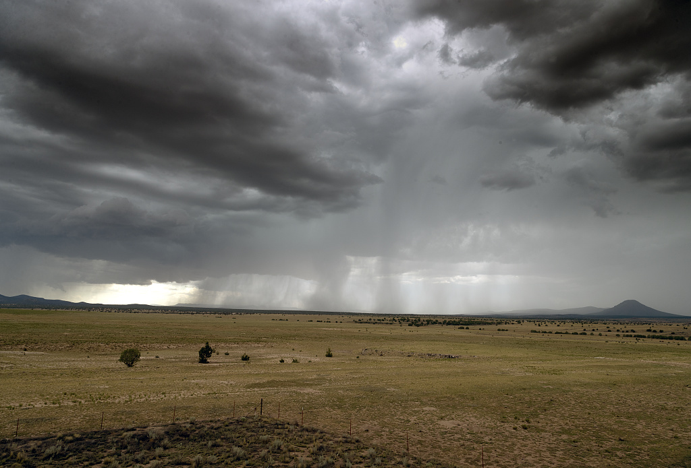

D1 · Story Frame
Develop the story context and include a concise methods/source note.
D2 · Editorial Figures

Figure 1: Tempe, Arizona a suburb of Phoenix, Arizona.
Source:
Highsmith, Carol M, photographer. Aerial view of the Phoenix, Arizona, area, with a focus on the campus of Arizona State University in the Phoenix suburb of Tempe. -03-26. Photograph. Retrieved from the Library of Congress, www.loc.gov/item/2018703537/.

Figure 2: Rain clouds in Seligman, Arizona.
Source:
Highsmith, C. M., photographer. (2017) Thunderstorm Seligman, Arizona. Arizona United States Seligman, 2017. -07-17. [Photograph] Retrieved from the Library of Congress, https://www.loc.gov/item/2018703399/.
D3 · Accessible Data Table
| Year | Jan-Mar Precipitation Total (inches) | Apr-Jun Precipitation Total (inches) | Jul-Sep Precipitation Total (inches) | Oct-Dec Precipitation Total (inches) | Yearly Precipitation Total (inches) |
|---|---|---|---|---|---|
| 2025 | 0.87 | 0.6 | 2.77 | 4.08 | 8.32 |
| 2024 | 3.4 | 0.43 | 0.73 | -0.01 | 4.55 |
| 2023 | 2.87 | 0 | 0.15 | 1.19 | 4.2 |
| 2022 | 0.55 | 0.32 | 1.91 | 3 | 5.78 |
| 2021 | 1.05 | 0.18 | 4.04 | 1.85 | 7.12 |
| 2020 | 3.47 | 0.07 | 1 | 0.45 | 4.98 |
| 2019 | 2.84 | 0.19 | 0.66 | 2.26 | 5.95 |
| 2018 | 0.77 | 0 | 2.64 | 5.89 | 9.3 |
| 2017 | 2.4 | 0.01 | 2.33 | 0.23 | 4.96 |
| 2016 | 1.31 | 0.57 | 2.48 | 1.83 | 6.19 |
| 2015 | 1.16 | 1.61 | 3.23 | 1.17 | 7.17 |
Table 1: Data collected from
National Oceanic and Atmospheric Administration (NOAA).
Data source per category:
Jan-Mar
Apr-Jun
Jul-Sep
Oct-Dec
Full Year
D4 · Responsive SVG
D5-D6 · System and Documentation
Extend Module 1 patterns, then link your sources, asset credits/licenses, test record, transformation notes, and AI disclosure.